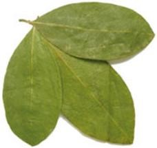

Introducción
En este curso se presenta el tema; "LA HISTORIA DE LA COCA COLA" donde abordaremos sus inicios de esta, como sus organizadores, el cómo surgió la idea de inventar y formar una bebida, luego cuáles fueron las dificultades que se presentaron, aparte de esto, afrontaremos las necesidades y oportunidades que lograron aprovechar, por tal motivo, esta monografía expresa y comparte la vida de los pioneros que dieron inicio a una gran compañía. Desde los trabajadores hasta los principales responsables de esta gran industria, y una de las más reconocidas a nivel mundial por su gran producto de calidad, que llegó a romper barreras y fronteras y que hoy se encuentra en casi todo el mundo como resultado de su esfuerzo, dedicación y perseverancia

John Stith Pemberton, una gran farmacéutico de esa época, quien se dedicó por muchos años, y adicto a la morfina, se empeño en buscar e poder inventar un remedio que pudiera curar y dejar de lado ese terrible dolor que aquejaba a muchos pobladores de la zona, tanto así que después de muchos intentos y fracasos, pudo entender y darle una solución a este terrible mal.
Al principio el la llamó, PEMBERTON"S FRENCH WINE COLA, muy parecido a un vino francés de la época, y que ya el teniendo conocimiento de la plata de coca, que era muy curativa por sus poderes medicinales ya que esta planta tenía muchas funciones pero la más predomínate era que tenía reacciones estimulantes y también como un afrodisiaco y además ayudaba la digestión, añ cansancio y estimulaba el desarrollo físico de la persona y una de las cosas más importantes es que se creía que prolongaba la vida de la persona.
Él, ignoraba que esta pócima luego sería una bebida muy adictiva para las personas que lo llegaran a consumir, y por tal así fue.

Teniendo en cuenta que en sus inicios esta bebida era conocida como " un tónico efectivo para el cerebro" 1. Luego esta logró su cometido hasta el punto que fue declarada en 1938 como "la Bebida por excelencia" en todo Estados Unidos, logrando con esto una buena posición en su cometido. Teniendo en cuenta que esta bebida contenía gas dándole una sabor peculiar e interesante. Es por lo tanto lo que formó con esta bebida, era darle un toque mágico para poder tener un impacto fuerte al público, y si que lo supo John Stith Pemberton.
Hay que tener en cuenta que esta bebida, no fue la única bebida de ese entonces que funcionaba como remedio, ya que también existían otros remedios pero con no muy buenos resultados como la coca cola. Pero si fue la primera bebida nacional que llegó a expandirse por todo el país. Logrando vencer a sus competidores dando un mejor precio y efectos más efectivos que cualquier otra. Un punto muy importante es la fórmula que se utilizó y los adicionales que se utilizaron para tremendo descubrimiento, lo interesante es que todo esto quedó registrado en una agenda del farmacéutico.

Data de los años 1880s, más exacto el 5 de Mayo del año 1886, cuando se forma la primera bebida en Atlanta, que en principio no tenía fines comerciales ni mucho menos lucrativos, ya que su fin fue el de aliviar el dolor de cabeza o migraña que aquejaba a algunos pobladores de Atlanta en los Estados Unidos; tal es el caso que el químico-farmacéutico John Pemberton, que a sus 54 años de edad , creó una sustancia que pudiera calmar esos malestares , utilizando unas hojas de Coca, muy utilizadas desde ese entonces como remedio natural para múltiples enfermedades o malestares en la población, y con la mezcla de semillas de Nuez de cola, obtuvo un remedio muy delicioso que en primer plano fue distribuido por él mismo en su farmacia ubicada en Atlanta, donde tubo una acogida gradual y con el paso del tiempo fue agarrando reconocimiento y valor.
Sus primeras pócimas de ese jarabe costaban alrededor de 5 centavos donde al paciente se le ofrecía un vaso de ese líquido pudiendo aliviar sus náuseas o malestares. Pero con el correr del tiempo este remedio pasó de lo artesanal a lo comercial dejando de lado su sentido original y ahora con una visión distinta, el de refrescar y aliviar la sed de muchas personas. Ya que al lograr posicionarse en el mercado como una bebida placentera y que era bebida por el rico y el pobre, el mismo año de su creación, gente con visiones de crecer, le plantearon a su creador, Don John Pemberton, una cierta cantidad de dinero para vender su fórmula.
Después de muchas decisiones y conversaciones, se llegó a consumar la venta y la fórmula y todo lo demás ( implementos y accesorios )pasó a manos de terceros, a la increíble suma de 23,300 dólares. Y esta se llegó a expandir a todo estados unidos abriendo nuevas envasadoras en todos los estados y el resto es Historia. Muchas personas lo consideran un gran inventor por la bebida que creó. Pero Murió el 16 de agosto de 1888, debido a un cáncer de estómago. Luego quien desempeño un gran papel en la comercialización del producto fue su contador , Frank Robinson, quien fue este último que creó el logotipo de lo que ahora se ve en las botellas de todos los tamaños.
Lo cierto es que a la muerte de Pemberton, no logró obtener y ver su ganancia como él lo esperaba pero con la participación de los demás como es el caso de Candler, la compañía incrementó sus ventas en un 4000% entre 1890 y 1900. 2 logrando ser una de las mejores compañías en su país con ventas que superaban sus expectativas y con múltiples ganancias que con el correr del tiempo supieron aprovechar y darle un buen provecho al éxito.
¿Por qué el nombre Coca Cola?
El nombre de Coca Cola proviene de sus primeros momentos cuando John Pemberton, utilizó hojas de Coca y semillas de nuez de cola para crear una bebida agradable al consumo humano como remedio, pero con el pasar del tiempo y con fines comerciales esta dejó de ser para dar el pase a otros ingredientes como son el azúcar, limón y vainilla mezclado con diferentes aceites y otros componentes. Hay que tener en cuenta que diferentes países donde se fabrica esta bebida, se utiliza diferentes tipos de azúcares debido a las circunstancias naturales y/o a la escaza accesibilidad para obtener este componente hace que algunos países recurran a otras alternativas como la Fructosa y derivados, dando como resultado diferente reacción al organismo del consumidor y una alteración en la economía de esta bebida.
Semillas de nuez de cola
Es su primer momento fue muy importante los ingredientes de este jarabe ya que muchas personas deseaban la receta y actualmente la fórmula secreta de la coca cola se identifica con el código 7x. y esto para evitar que los ingredientes de esta bebida no cayeran y también ahora no caigan en manos extrañas de gente competidora o con el único fin de realizar daño y malestar por la competencia y para los proveedores que tal ves buscaban maneras de lucrarse acosta de otros. Pero como en todo lugar, la piratería llegó a manos extrañas por parte de los falsificadores y para poder evitar esto, la compañía se vio en la obligación de contratar a un grupo de detectives para parar esta ola de imitaciones que ya se estaba propagando por varios estados y condados donde adulteraban la bebida y engañando al cliente logrando con ello la renuncia definitiva a esta bebida. En conclusión este tipo de comercio sucio estaba denigrando y quitando valor a la coca cola, ya que mucha gente adquiría este producto por primera ves sin imaginar que sería una copia de la real bebida causando un malestar digestivo como se comprobó en varios lugares y zonas del estado de Atlanta donde imperó esta falsificación.
Los detectives tratados para este trabajo fueron de una agencia de detectives llamados PINKERTON, y su función era lograr entrar y visitar todas las cantinas, tiendas, bares y centros públicos donde se pudiera acceder a la coca cola, luego estos pedieran una bebida coca cola y sin que nadie lo notara, ellos tomaban muestras de este bebida para luego ser analizadas químicamente y así poder descubrir las posibles falsificaciones que se estaban haciendo con el nombre de la coca cola.
Luego de una server investigación y trabajo minucioso , se logró comprobar en el año 1926 que existían más de 7000 sepulturas en el "mausoleo" de imitaciones de coca-cola. 3 Esta bebida que todo el mundo la bebe y que se ganó muchos competidores descontentos y que solo buscaban la derrota de coca-cola, se limitaron con su guerra ya que eran fieles testigos del desarrollo que tenía la coca-cola a cada momento y era algo inevitable por muchos motivos, por tal razón, decidieron hacer un paso al costado y poder tener una armonía de trabajo entre ellas y la coca cola pero siempre y cuando cada una cuidando sus espaladas ante una futura amenaza de competición.
Muchas personas se han preguntado por qué se utilizó la coca es esta bebida y otros tantos dicen que por qué no se sigue usando esta bebida en nuestros días, pero la razón solo la sabe el que la inventó, pero si miramos atrás y con más detenimiento nos daremos cuenta que esta planta originaria de la cordillera de los andes, parte sudamericana, es una de las más reconocidas en el mundo y tiene una grana cogida en muchas partes del mundo por su gran poder curativo que tiene en los humanos para aliviar, curar, proteger y muchas cosas más beneficiosas para el ser humano. Esta planta en su etapa normal alcanza un tamaño de 2 metros a más y sus forma de las hojas son lanceoladas con un promedio de 10cm de longitud y con bordes enteros y están a su vez desprenden un aroma agradable al olfato humano y mucho mejor al contacto con el agua caliente.
"Entre sus funciones se encuentran el de ayudar a digerir los alimentos de una manera mas completa y reducir la secreción salivar de las mucosas".
También ayuda al vértigo, la gastritis, el reumatismo o la artritis y además posee un efecto directo en el sistema nervioso. Por tal motivo ya se entiende el motivo de este farmacéutico al adquirir esta planta medicinal para los dolores de cabeza. Luego para complementar esta fórmula se requiere de la Nuez de cola es la semilla de un árbol de 6 a 7 metros que crece en África, en Jamaica y en Brasil. 5 Muy poco utilizado o falta de conocimiento de sus propiedades.La nuez de cola solía ser uno de los ingredientes de Coca-Cola, después de que la cocaína se hizo ilegal. Ahora su permanencia (o no) en la Coca-Cola es un secreto, pero hace parte de los ingredientes en otras bebidas. En Jamaica y en algunos países de Sudamérica la nuez de cola es consumida como estimulante sexual similar a cocaína. La nuez de cola puede ser masticada antes de comer para estimular la digestión y las papilas gustativas. muy utilizada también en partes de Bolivia y Perú. Debido al gran desgaste energético del cuerpo al consumir la nuez de cola, también es usada como elemento para la pierda de peso y también como afrodisiaco y relajador, por tal motivo ahora es un secreto si está en los ingredientes actuales de la coca-cola.
Para entender mejor este contexto, se sabe la composición actual de la coca cola en el libro "Dios, Patria y Coca Cola, la historia prohibida de la bebida más famosa del libro" del escrito Mark Pendergrast, en la cual se presenta los insumos e ingredientes para poder preparar una coca cola casera donde contiene: azúcar, ácido Cítrico, jugo de Lima, agua, aromatizantes, extracto de vainilla y citrato de cafeína con otras cosas mas como lo podemos ver en el siguiente contexto.